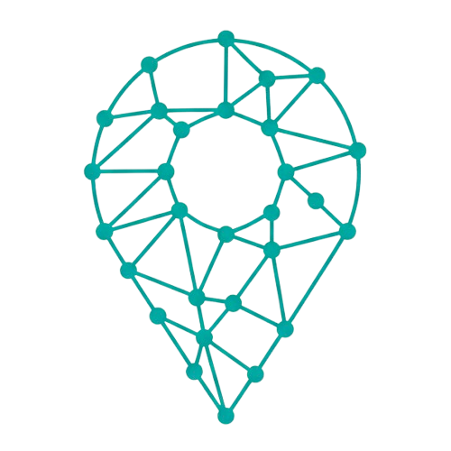

Founding execution
Built with early-stage constraints where speed matters, but architecture still has to support real product behavior.
AI & Data Engineer
This page is the focused story behind my work at VISIC and the product it produced: CityWise, a live civic intelligence experience built to make public data more legible and useful.
CityWise is the clearest expression of how I like to build: real product surface, clean data flow, strong backend foundations, and a user experience that translates complexity into something accessible.

Not as another bullet under experience, but as the strongest proof that I can help take an idea from early-stage ambiguity to a live, user-facing product.
Built with early-stage constraints where speed matters, but architecture still has to support real product behavior.
Structured the product around reliable flows across APIs, storage, validation, and application logic.
CityWise is useful because the product layer and the engineering layer meet in a working experience, not just a demo.